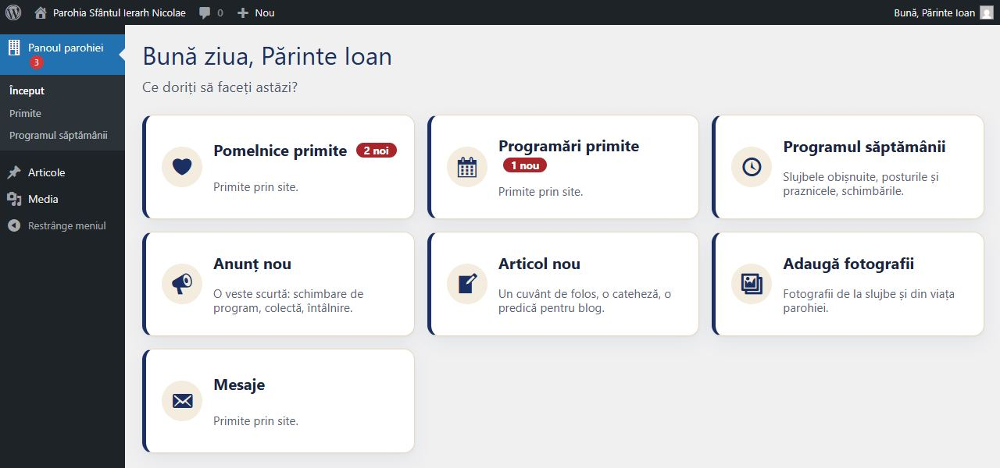

Un site pentru parohia dumneavoastrăAnunțurile le puneți singur, programul se face singur
Un site curat și demn, care se citește bine pe telefon. Anunțul de duminică îl scrieți la fel de ușor ca pe Facebook. Programul slujbelor îl stabiliți o dată, iar posturile, Săptămâna Mare și praznicele se așază singure în calendar, după Pascalie, an de an. Credincioșii vă pot trimite pomelnice și cereri de programare direct din site.
Vedeți site-ul demonstrativIntrați în panoul preotului
Demo-ul se deschide în browser în aproximativ jumătate de minut, fără nimic de instalat. Puteți scrie anunțuri și schimba programul în voie: nimic nu se salvează și nimic nu se trimite.

Tot ce caută credincioșii, într-un singur loc
Programul slujbelor
- Săptămâna obișnuită, stabilită o dată.
- Posturile și Săptămâna Mare, calculate după Pascalie.
- Praznicele și hramul, cu Liturghie adăugată singură.
- Calendarul lunii și o listă de tipărit pentru avizier.
Anunțuri și articole
- Anunțurile parohiei, separat de articolele de învățătură.
- Fotografii de la slujbe și din viața parohiei.
- Pagina se actualizează singură, fără să cereți cuiva.
Pomelnice și programări
- Pomelnicul vine în panoul preotului, gata de tipărit.
- Cereri pentru botez, cununie, sfeștanie sau parastas.
- Datele se șterg singure după 40 de zile (GDPR).
Sprijin și contact
- Contul parohiei, cu buton de copiere.
- Formularul 230, pentru parohiile din România.
- Hartă, telefon și un buton «Sună» pe telefon.
- Pagini în limba țării, pentru parohiile din diaspora.
Pentru credincioși și pentru preot



De ce un site, dacă avem Facebook?
Pe Facebook, programul de săptămâna trecută se pierde sub postări noi, iar cine nu are cont nu vede aproape nimic. Pe site, programul, adresa și contul parohiei sunt mereu la un clic, iar cine caută parohia pe Google o găsește. Pagina de Facebook rămâne: anunțurile de pe site se pot distribui acolo.
Un preț o dată, apoi grija lunară, dacă doriți
Lansare
Pachetul Esențial, la preț redus, pentru primele trei parohii care ne lasă, la final, o scurtă recomandare scrisă.
Esențial
- Instalarea și datele parohiei.
- Programul slujbelor, pregătit pe tot anul.
- Pomelnic, programări, sprijin și contact.
- Un ghid cu imagini pentru preot.
Plus
- Tot ce are Esențial.
- Mutarea a până la 20 de anunțuri sau articole de pe site-ul ori de pe pagina actuală.
- O pagină în limba țării, pentru diaspora.
- Sigla parohiei, desenată pentru site.
Grija lunară
- Actualizări și copii de siguranță.
- Răspuns la întrebări prin mail.
- Ajutor la programul Postului Mare și al Paștilor.
Totul de la noi · 25 € pe lună sau 250 € pe an
Nu vă ocupați de nimic tehnic. Găzduirea și numele site-ului sunt incluse, iar numele site-ului se înregistrează pe numele parohiei. Primiți tot ce cuprinde grija lunară. Dacă doriți vreodată să plecați, vă predăm gratuit site-ul și domeniul.
Dacă preferați să plătiți singuri găzduirea și numele site-ului (de obicei 40-60 € pe an), ele rămân direct pe numele parohiei: ghidul pas cu pas. Toate plățile către noi se fac online, prin Gumroad, cu cardul sau prin PayPal; abonamentele se pot opri oricând.
De la mail la site, în aproximativ o săptămână
Ne scrieți
Ce pachet vă interesează și, dacă aveți deja, adresa site-ului sau a paginii de Facebook.
Completați fișa
Numele și hramul, adresa, programul obișnuit și contul parohiei: o singură pagină, online.
Vedeți site-ul
Îl primiți întâi spre verificare. Plătiți abia când sunteți mulțumit, online, cu cardul sau prin PayPal; chitanța vine pe e-mail.
Îl folosiți
Cu ghidul cu imagini, primul anunț se pune în câteva minute.
Cereți o ofertă
Scrieți-ne câteva rânduri despre parohie. Răspundem în cel mult două zile lucrătoare, fără nicio obligație.
Completați fișa parohieiAveți întâi o întrebare? Scrieți-ne la aisib@proton.me. Termenii serviciului.
Site-ul este construit pe WordPress, cea mai folosită platformă de site-uri din lume, cu cod deschis: parohia nu depinde de noi și poate lucra oricând cu altcineva.